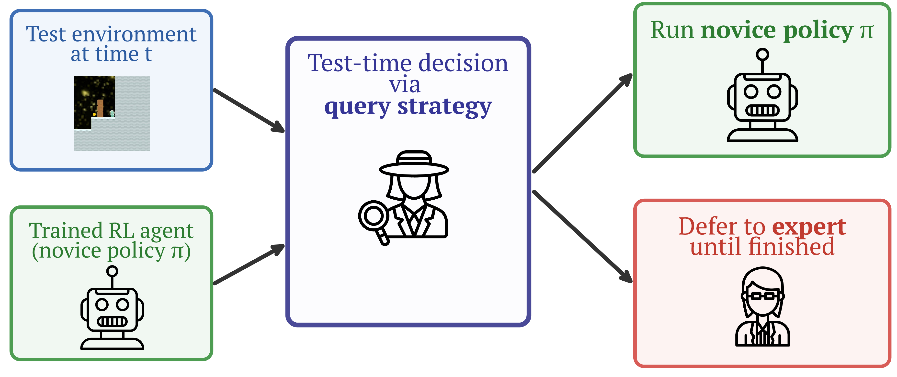
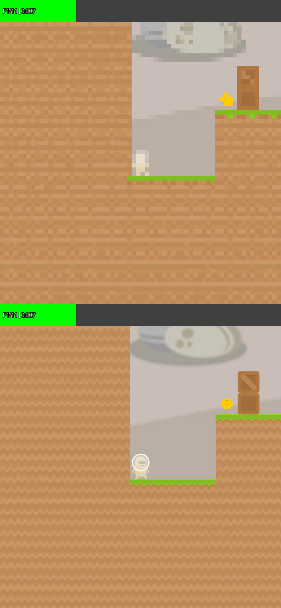
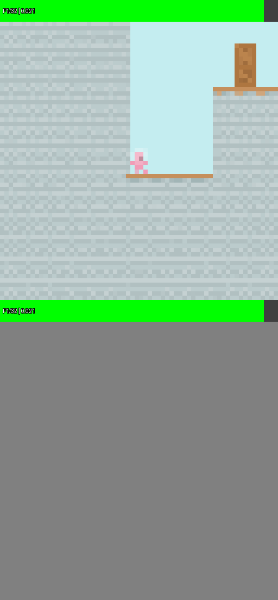
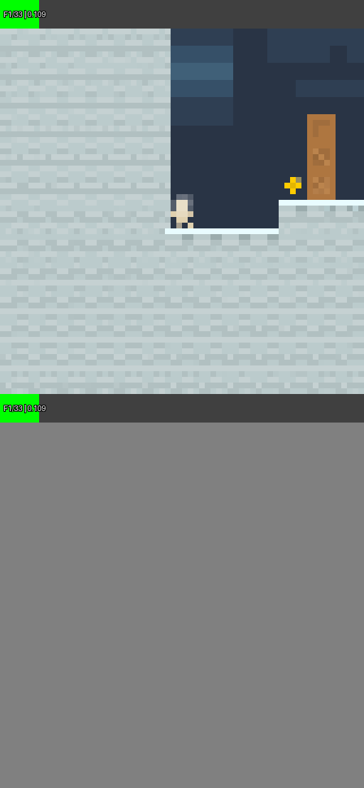
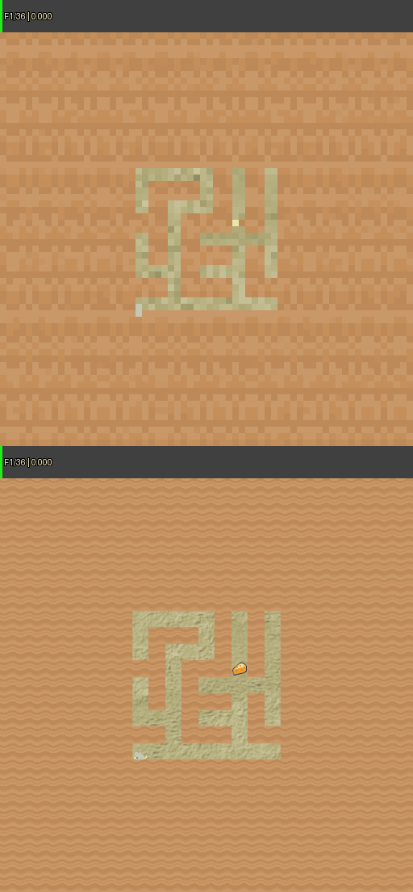
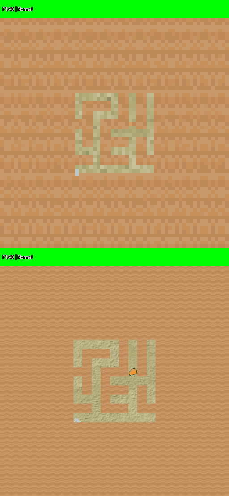
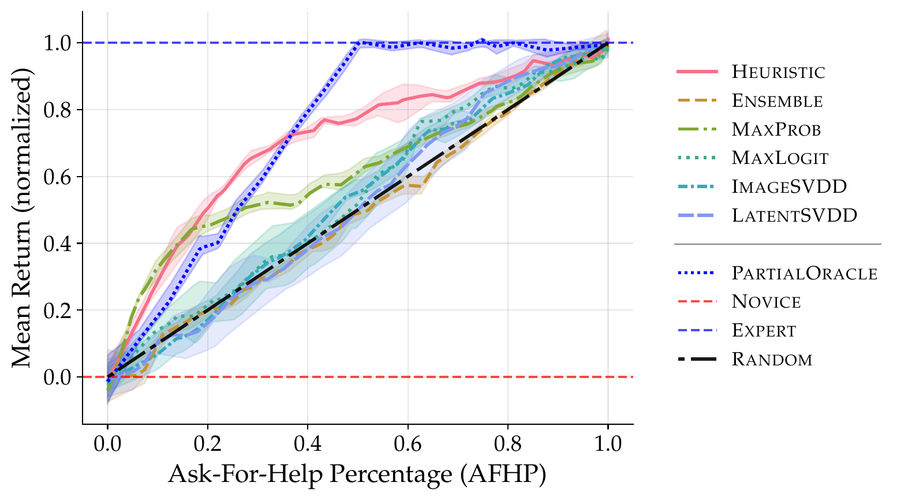
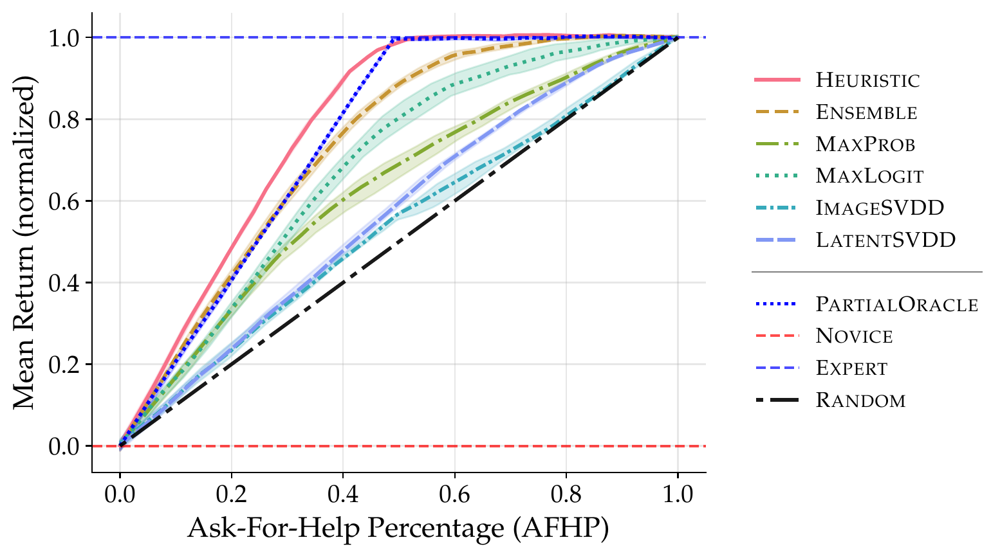
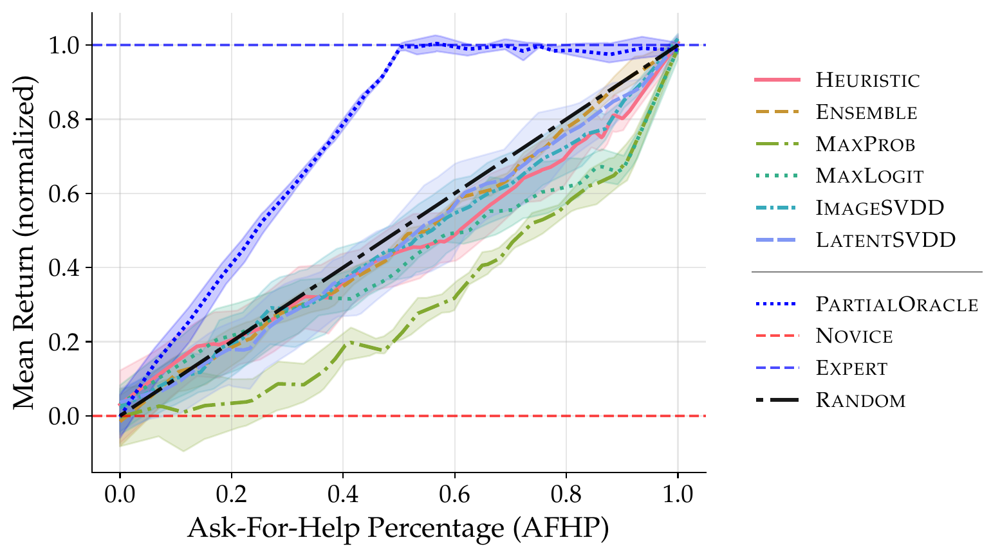
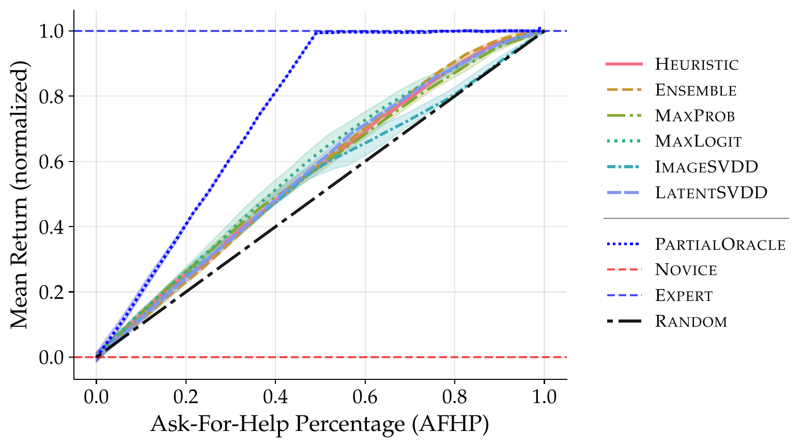

Overview

We study goal misgeneralization (GMG) in an asking-for-help framework: a frozen novice policy acts by default, while a query strategy monitors the interaction and decides when to hand control to an expert for the rest of the episode. A useful query strategy must defer before the novice's pursuit of a proxy goal causes harm, while avoiding unnecessary queries in situations the novice handles on its own.
We compare six query strategies in the Coinrun and Maze GMG benchmarks, across a range of ask-for-help budgets (AFHP): confidence scores (MaxProb, MaxLogit), deep ensemble disagreement (Ensemble), Deep SVDD-based OOD detection on raw observations and latent features (ImageSVDD, LatentSVDD), and a simple episode-length timer (Heuristic). We then introduce irrecoverable variants of both environments, in which reaching the proxy goal ends the episode with zero reward, and re-evaluate all strategies.
Videos
Example behavior observed in Coinrun and Maze. The videos show the down-sampled agent view at the top and the human observation at the bottom. The bar at the top shows the deferral score and turns red when the agent asks the expert for help.
Coinrun





Maze




Results
Asking for help can mitigate GMG in existing benchmarks
We compare the test-time return of the query strategies across ask-for-help budgets (AFHP). Learning-free methods are competitive: a simple episode-length heuristic performs well in both environments. Successful episodes typically follow a pattern: the novice first pursues the proxy goal, the query strategy then triggers, and the expert recovers the episode by backtracking to the intended goal.

Coinrun

Maze
Irrecoverable proxy pursuit exposes the limits of current query strategies
The success above relies on a property of the benchmarks: pursuing the proxy goal has no irreversible consequences, so detecting failure after the fact is sufficient. In our modified environments, where reaching the proxy goal terminates the episode with zero reward, performance drops drastically: no method beats the random baseline in Coinrun, and all methods degrade heavily in Maze. Query strategies must detect the goal-relevant shift before the proxy goal is reached, and current methods fail to do so in time.

Coinrun (irrecoverable)

Maze (irrecoverable)